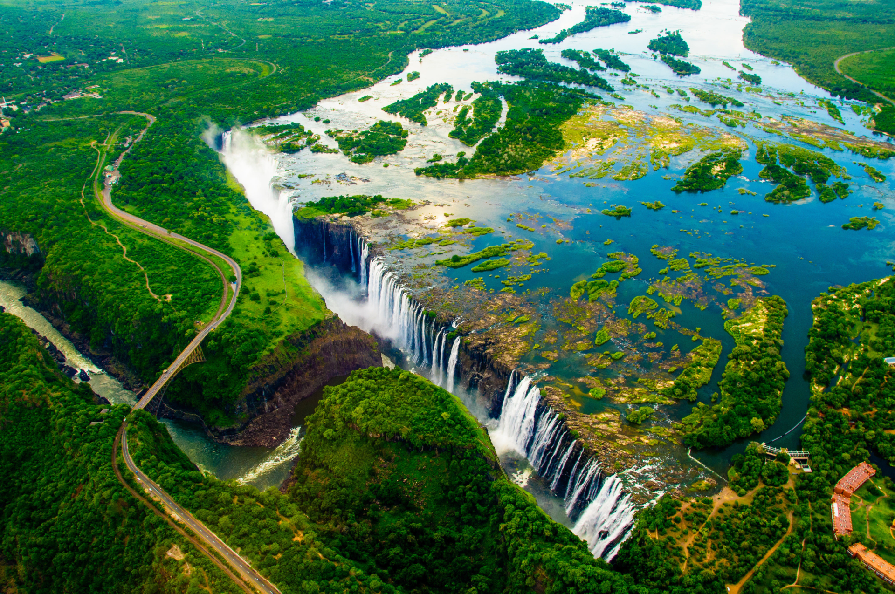
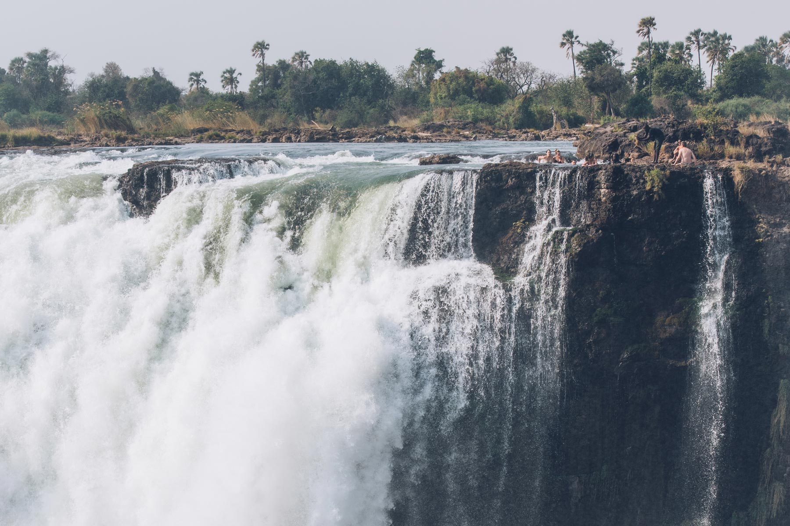
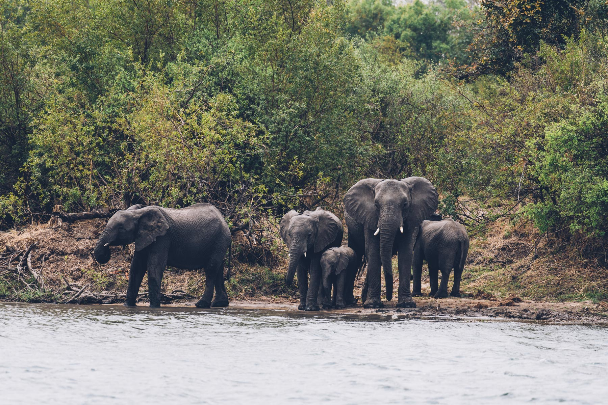
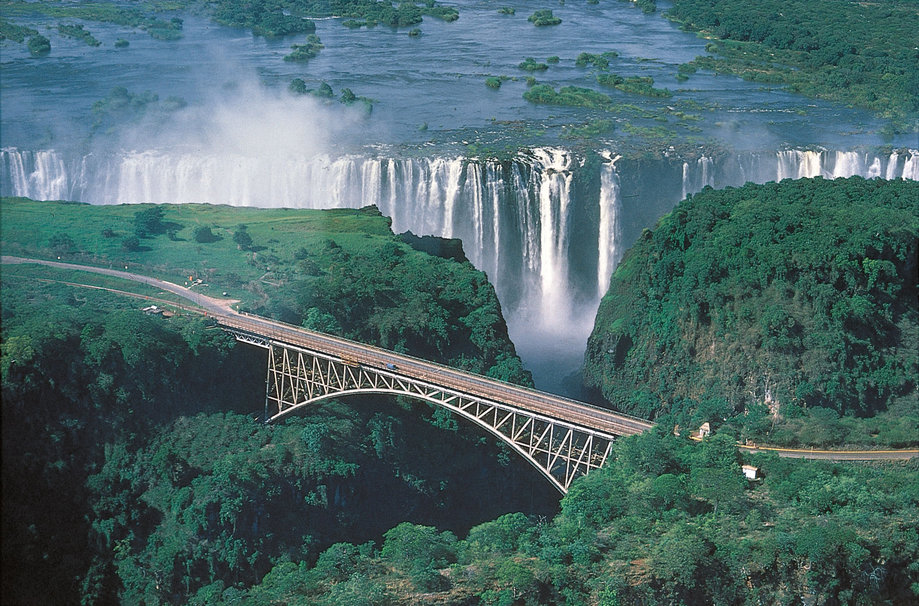

Une des sept merveilles naturelles du monde, site touristique majeur d’Afrique Australe, situées à la frontière du Zimbabwe et de Zambie, les Victoria Falls sont époustouflantes et à ne pas manquer lors d’un voyage safari en Afrique du Sud et Australe. Avec ses 1737m de large, 107m de hauteur et un débit moyen de 1100m3/sec, les Chutes Victoria font parties du top 3 des plus grandes cascades du monde (avec les chutes Iguaçu entre le Brésil/Argentine et les chutes du Niagara au Canada), les Victoria Falls en mettent plein la vue (dans tous les sens du terme) !! Nous y étions en septembre après un safari-croisière entre Botswana et Zimbabwe. Les chutes Victoria sont encore plus larges et plus grandes que les célèbres chutes du Niagara, aux Etats-Unis. Ce joyau naturel marque la frontière entre la Zambie et le Zimbabwe.
D'autres visiteurs choisissent de voir la chute de beaucoup plus près, à l'endroit où l'explorateur écossais, David Livingstone, a débarqué en 1955. Le premier Européen à découvrir cette merveille l'a nommée en hommage à la reine d'Angleterre de l'époque. Ce jour-là, un touriste néerlandais a l'opportunité d'être guidé jusqu'au précipice, sécurisé par trois guides : devant lui, 100 mètres de vide.
Que faire aux Chutes Victoria ?Le site des chutes Victoria, entre la Zambie et le Zimbabwe, est aussi appelé dans la langue locale "la fumée qui gronde", à cause du bruit assourdissant et du nuage de fines gouttelettes qui reste en suspens dans l'air. Elles sont deux fois plus larges et deux fois plus profondes que les chutes du Niagara, aux Etats-Unis. En cette saison, quatre millions de litres d'eau se déversent chaque seconde depuis le haut des chutes. "Il parait que c'est le plus grand rideau d'eau du monde, et c'est l'une des merveilles naturelles de la planète, c'est tellement spectaculaire vu du ciel, je ne m'en lasse jamais", explique Stéphanie, pilote d'un hélicoptère touristique qui permet de survoler les chutes Victoria et le fleuve Zambèze pour 175 euros par personne. 
Prenez votre repas au bord de l'eau en amont des chutes, le cadre est naturel, vous pourrez y observer des éléphants au bord de l’eau, des hippos, des oiseaux. Tout dépend de votre chance mais c’est très probable d’en observer durant la balade.
 Vous pouvez également faire plusieurs autres activités sur les chutes Victoria telles que le saut à l’élastique,le saut en parachute, le rafting,la tyrolienne. Il est également possible de partir explorer le parc national des chutes Victoria qui abrite le célèbre Big 5.
